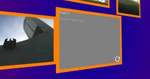

TiltViewer
https://www.simpleviewer.net/tiltviewer/

Features
- 3D-Navigation mit Vorschaubildern
- Vollbildmodus
- Exif-Anzeige und Bildbeschreibungen auf der Rückseite des Bildes
- Flash-Galerie. Javascript muss aktiviert sein.
Diese Engine ist veraltet. Sie sollte nicht für neue Projekte verwendet werden.
- Kein Link "Originale herunterladen"
- Multiple Storyboards werden nicht unterstützt